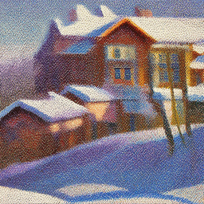
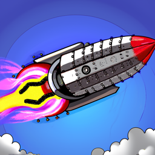

CS 180 Project 5: Diffusion Models
By [Your Name]
Overview
This project explores the implementation and applications of diffusion models, from basic noise addition to advanced image manipulation techniques. Using a random seed of 180, we investigated various aspects of diffusion models including denoising, sampling, and image translation.
Setup
Initial experiments with different inference steps demonstrated the model's capabilities. Looking at the three sets of images with different inference steps (5, 20, and 50), we can observe that with more inference steps, the generated images become significantly clearer and more detailed. The progression shows that with 5 steps the images appear rough and noisy, but as we increase to 20 and then 50 steps, the images gain better definition, smoother transitions, and more refined details, particularly visible in the winter landscape scenes, portrait photos, and rocket illustrations
5 Steps


20 Steps
50 Steps

1.1 Forward Process
Implemented the forward process using the equation:
The forward function systematically corrupts a clean image by adding controlled amounts of Gaussian noise while simultaneously scaling down the original image's influence. For the Campanile image, we can observe this corruption process across three critical timesteps: At t=250, while the tower's basic structure remains visible, random colored noise begins to interfere with the image clarity, particularly noticeable in the sky and around the tower's edges. Moving to t=500, the degradation becomes more severe - the Campanile's distinctive shape is significantly obscured, with the noise patterns creating a colorful static that makes architectural details difficult to discern. Finally, at t=750, the image has almost completely succumbed to random noise, with only the faintest ghost-like outline of the tower barely visible through a dense field of multicolored pixels. This progression demonstrates how the forward process gradually transforms a clear, structured image into increasingly random noise patterns, effectively "forgetting" the original image's information in a controlled manner.


1.2 Classical Denoising
Applied Gaussian blur filtering to denoise images at timesteps [250, 500, 750]. Results showed limitations of classical methods in handling complex noise patterns.

1.3 One-Step Denoising
Utilized the pretrained UNet model to estimate and remove noise in a single step. Results demonstrated significant improvement over classical methods.


1.4 Iterative Denoising
The iterative denoising process demonstrates how diffusion models can effectively restore images through multiple steps, starting from highly noisy states. Using a stride of 30 timesteps from 990 down to 0, we can observe the gradual improvement in image quality as the model progressively removes noise. When starting at timestep, the process shows remarkable improvement over single-step denoising or classical Gaussian blurring methods. Each denoising iteration applies a careful balance of noise removal and signal preservation, guided by the model's learned understanding of natural images. The results clearly show how multiple smaller denoising steps produce significantly better results than attempting to denoise in a single large step, with the final image retaining more detail and natural characteristics of the original image.


1.5 Diffusion Model Sampling
The model, guided by the prompt "a high quality photo," gradually transforms random noise into a coherent image by repeatedly estimating and removing noise, using learned patterns from its training data. Each step in the denoising process brings the image closer to the natural image manifold while maintaining consistency with the text prompt. This demonstrates how diffusion models can create meaningful structure from pure randomness through a series of small, controlled steps that gradually increase the signal-to-noise ratio until a clear image emerges.
1.6 Classifier-Free Guidance
Classifier-Free Guidance (CFG) enhances image generation by combining two different noise estimates: a conditional estimate based on the given prompt ("a high quality photo") and an unconditional estimate using an empty prompt (""). The process uses a scaling factor (cfg_scale) to blend these estimates according to the formula: noise_est = noise_est_uncond + cfg_scale * (noise_est_cond - noise_est_uncond). When cfg_scale > 1, we amplify the difference between conditional and unconditional estimates, which tends to produce higher quality images that more strongly align with the prompt. The iterative_denoise_cfg function implements this by running the UNet model twice at each denoising step - once with the prompt embeddings and once with null embeddings - then combining their predictions using the CFG formula before proceeding with the denoising step. This dual prediction approach helps the model generate images that are both high quality and more faithful to the desired prompt. We used a cfg_scale of 7 for these images below:

1.7 Image Translation and Conditioning
Explored SDEdit-style image editing with varying noise levels [1, 3, 5, 7, 10, 20] and text conditioning.


Now we explored inpainting. Inpainting with diffusion models allows us to selectively modify parts of an image while preserving the rest. The process involves using a binary mask to specify which areas to edit (mask=1) and which to preserve (mask=0). At each denoising step, we generate new content for the masked regions while keeping the unmasked regions identical to the original image, adding the appropriate amount of noise for each timestep. This creates a seamless blend between the preserved and generated parts of the image. Below are the results of applying inpainting to our images:


We also tried applying text-conditioned image to image translation. For the images of the campanile we used the prompt "a rocket ship" and for the Skyscraper Image we used "a lithograph of a waterfall." Below are the results:

Visual Anagrams
Visual anagrams using diffusion models present an intriguing approach to creating dual-perspective images by cleverly combining noise estimates from two different prompts. Initially, I attempted to create these illusions by simply averaging the noise estimates from both orientations - one for the upright image ("an oil painting of people around a campfire") and one for the inverted image ("an oil painting of an old man"). However, this straightforward averaging approach produced results where neither perspective was clearly visible. Through experimentation, I discovered that adjusting the ratio of the noise estimates, giving slightly more weight (0.6) to the current orientation's noise estimate and less weight (0.4) to the flipped orientation's estimate, produced much more convincing results. This weighted approach helped maintain the clarity of each perspective while still preserving the dual-nature of the image, allowing viewers to see distinctly different scenes depending on the orientation.
Hybrid Images
In this section, we implemented Factorized Diffusion to create hybrid images by manipulating frequency components of noise estimates from different text prompts. Using a Gaussian blur with kernel size 33 and sigma 2, we separated noise estimates into low and high-frequency components. For example, in our skull/waterfall hybrid, we combined the low frequencies from the skull noise estimate with the high frequencies from the waterfall noise estimate. This created an image that appears as a skull when viewed from afar (where low frequencies dominate) and transforms into a waterfall when viewed up close (where high frequencies become visible). We also experimented with other pairs like lithograph of red panda and skull and watercolor painting of seahorse and flowers, demonstrating how this technique can create compelling dual-perception images by leveraging the frequency-based characteristics of human vision..
Reflection
This project has provided a comprehensive exploration of diffusion models and their creative applications. We started with understanding the fundamental concepts of forward and reverse diffusion processes, implementing denoising techniques using both simple Gaussian blur and sophisticated UNet-based approaches. Through classifier-free guidance, we learned how to control image generation using text prompts, demonstrating the power of multimodal AI systems. The project then advanced to more creative applications: SDEdit showed us how to modify existing images with varying degrees of transformation, while inpainting revealed the model's ability to seamlessly fill in masked regions. The culmination in visual anagrams and hybrid images showcased how diffusion models can be manipulated to create sophisticated optical illusions. Throughout these experiments, we gained practical experience in handling GPU memory constraints, managing tensor operations, and fine-tuning parameters like noise levels and weights to achieve desired results. This project has demonstrated both the technical capabilities and creative potential of diffusion models in modern AI-driven image generation and manipulation.